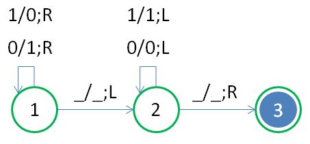
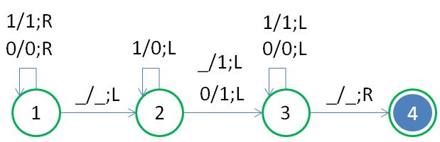
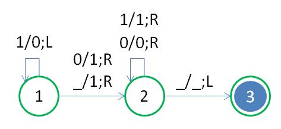

Brainfuck 看規則
December 16, 2021雖然只用到了八個符號，Brainfuck 實際上是個蠻複雜的機器，這從〈Brainfuck 看狀態〉中可以看得出來，當中最後也談到，目前的 Brainfuck 還包含了一些高階的描述，若要更進一步地，將加、減法這類的運算，拆解為更基本的簡單運算，需要些什麼？
簡單規則
在〈Brainfuck 看狀態〉中談到，「狀態是指接下來可以讀取什麼字元、寫入什麼字元、如何移動磁頭，然後進入哪個狀態」，而其中流程圖在狀態之間會看到 n/n + 1;Di 之類的標示，這表示在描述狀態轉移時的規則不夠簡單，若要簡單到不能再分解，那麼規則必須是由以下構成：
- 目前的狀態
- 讀取的字元
- 寫入的字元
- 磁頭移動方向（只能是左或右）
- 進入哪個狀態
字元讀取或寫入的中間，不能有任何加料，也就是狀態流程圖中，僅能出現 a/b;L 這類標示，而不能有代數 n 或甚至 n + 1 之類的標示。
翻轉位元
例如，如果有台機器，磁帶一開始會有 01010011 之類的字元，機器的作用就是由左往右移動磁頭，遇到 0 就改為 1，遇到 1 就改為 0，在全部字元都改完後，磁頭回到磁帶開頭，那它的狀態轉移圖可以如下表示：

上圖中底線表示空白，也就是該處沒有字元，為了便於區別狀態，狀態可以標示數字或其他符號，這就是簡單規則，沒有高階的運算描述，每個規則都包含兩個圓圈與 a/b;L 標示，箭頭只是用來識別狀態轉移的方向，因此這個看似翻轉位元的機器，共有六條規則：
- 目前狀態 1，讀入 0，寫入 1，磁頭右移，進入狀態 1
- 目前狀態 1，讀入 1，寫入 0，磁頭右移，進入狀態 1
- 目前狀態 1，讀入空白，寫入空白，磁頭左移，進入狀態 2
- 目前狀態 2，讀入 0，寫入 0，磁頭左移，進入狀態 2
- 目前狀態 2，讀入 1，寫入 1，磁頭左移，進入狀態 2
- 目前狀態 3，讀入空白，寫入空白，磁頭右移，進入狀態 3（接受狀態）
若要再仔細探討，狀態 1 是持續翻轉位元，狀態 2 是讓磁頭連續向左移動（記得〈Brainfuck 看輸入〉中需要磁頭連續移動嗎？「連續移動」也算是個高階描述），狀態 3 是將磁頭置於第一個字元後的狀態。
二進位加一
類似地，如果想要執行二進位加一的動作呢？如果有台機器，磁帶一開始會有 11010011 之類的字元，磁頭一開始在最左邊的位元，執行過後必須是 11010100，磁頭也是回到最左邊的位元，那它的狀態轉移圖可以如下表示：

這個執行二進位加一的機器，共有九條規則：
- 目前狀態 1，讀入 0，寫入 0，磁頭右移，進入狀態 1
- 目前狀態 1，讀入 1，寫入 1，磁頭右移，進入狀態 1
- 目前狀態 1，讀入空白，寫入空白，磁頭左移，進入狀態 2
- 目前狀態 2，讀入 1，寫入 0，磁頭左移，進入狀態 2
- 目前狀態 2，讀入 0，寫入 1，磁頭左移，進入狀態 3
- 目前狀態 2，讀入空白，寫入 1，磁頭左移，進入狀態 3
- 目前狀態 3，讀入 0，寫入 0，磁頭左移，進入狀態 3
- 目前狀態 3，讀入 1，寫入 1，磁頭左移，進入狀態 3
- 目前狀態 3，讀入空白，寫入空白，磁頭右移，進入狀態 4（接受狀態）
狀態 1 是連續右移，狀態 2 是進位得 0，狀態 3 是連續左移，狀態 4 是將磁頭置於第一個字元後的狀態。
磁頭一開始並不一定要置於開頭，也可以是在資料最右方，若是如此，想要執行二進位加一的動作，狀態轉移圖可以簡化為以下：

也就是規則簡化為六條：
- 目前狀態 1，讀入 1，寫入 0，磁頭左移，進入狀態 1
- 目前狀態 1，讀入空白，寫入 1，磁頭右移，進入狀態 2
- 目前狀態 1，讀入 0，寫入 1，磁頭右移，進入狀態 2
- 目前狀態 2，讀入 0，寫入 0，磁頭右移，進入狀態 2
- 目前狀態 2，讀入 1，寫入 1，磁頭右移，進入狀態 2
- 目前狀態 2，讀入空白，寫入空白，磁頭右移，進入狀態 3（接受狀態）
狀態 1 是進位得 0，狀態 2 是連續右移，狀態 3 是將磁頭置於最右方字元後的狀態。
自動機器
無論是翻轉位元或是二進位加一，都稱它們是自動機器，因為它們包含了…
0、1、空白符號- 符號對應的規則
- 可按規則執行動作的硬體
顯然地，它們都是特定用途，它們能接受的字元就是 0、1 或空白，可以執行的運算也只有一種，不若 Brainfuck，隨著你撰寫的程式不同，Brainfuck 可以扮演特定的運算機器。
無論是翻轉位元或是二進位加一，目前可按規則執行動作的硬體就是你的腦袋，不過，既然之前已經實作了 Brainfuck，將之簡化，使之僅做特定運算用途，應該不是件難事！